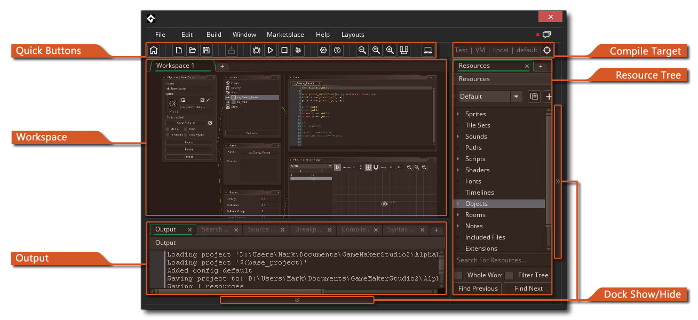
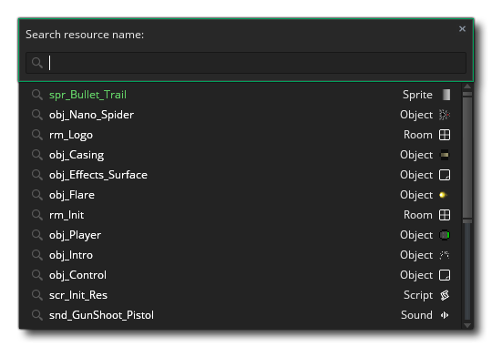
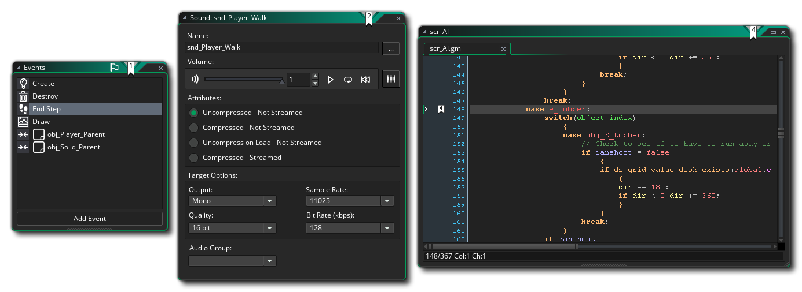
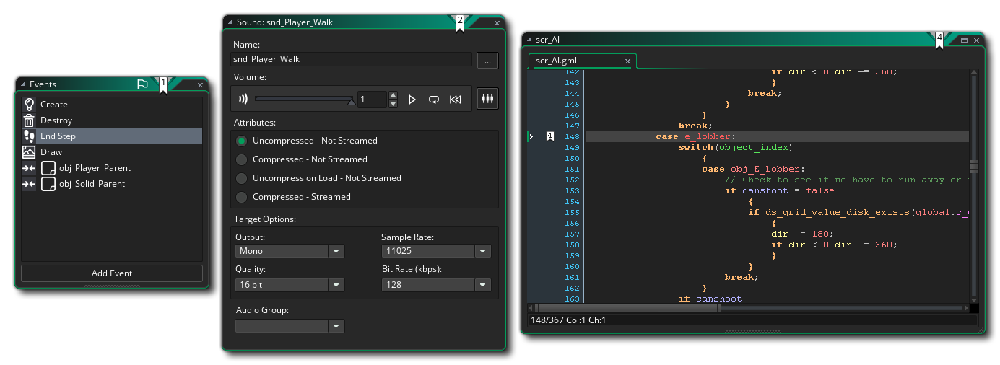

Après la connexion et le démarrage d'un nouveau projet, GameMaker Studio 2 vous amène à l' espace de travail initial avec des fenêtres de base ancrées à l'EDI. En général, l'espace de travail est simplement une zone où vous pouvez organiser les différentes ressources de votre jeu pendant que vous travaillez: 
Comme vous pouvez le voir, l'espace de travail initial se trouve sur un onglet en haut de l'écran (et vous pouvez le renommer en double-cliquant sur l'onglet), mais vous pouvez créer d'autres espaces de travail pour le projet en cliquant sur  sur le côté, vous offrant plusieurs espaces de travail possibles pour n'importe quel projet. Par exemple, vous travaillez peut-être sur des interactions entre le joueur et plusieurs objets ennemis, de sorte que le joueur se trouve dans son propre espace de travail et les objets ennemis dans un autre, et peut-être un autre espace de travail uniquement.
sur le côté, vous offrant plusieurs espaces de travail possibles pour n'importe quel projet. Par exemple, vous travaillez peut-être sur des interactions entre le joueur et plusieurs objets ennemis, de sorte que le joueur se trouve dans son propre espace de travail et les objets ennemis dans un autre, et peut-être un autre espace de travail uniquement.
Une autre caractéristique importante des espaces de travail est que vous pouvez cliquer  sur l'onglet et - en maintenant le bouton de la souris
sur l'onglet et - en maintenant le bouton de la souris  down - faites-le glisser hors de la fenêtre IDE principale dans sa propre fenêtre individuelle, ce qui rend très facile l'organisation des choses si vous utilisez, par exemple, plusieurs affichages. Vous fusionnez également ces fenêtres d'espace de travail secondaire dans le principal en faisant glisser l'onglet sur la première fenêtre. Notez que même si vous semblez avoir deux instances de l'EDI en cours d'exécution, elles sont toutes les deux pour le même projet et vous ne pouvez pas avoir un projet dans l'autre et l'autre à moins d'ouvrir spécifiquement deux instances de GameMaker Studio 2.
down - faites-le glisser hors de la fenêtre IDE principale dans sa propre fenêtre individuelle, ce qui rend très facile l'organisation des choses si vous utilisez, par exemple, plusieurs affichages. Vous fusionnez également ces fenêtres d'espace de travail secondaire dans le principal en faisant glisser l'onglet sur la première fenêtre. Notez que même si vous semblez avoir deux instances de l'EDI en cours d'exécution, elles sont toutes les deux pour le même projet et vous ne pouvez pas avoir un projet dans l'autre et l'autre à moins d'ouvrir spécifiquement deux instances de GameMaker Studio 2.
Lorsque vous démarrez GameMaker Studio 2, votre espace de travail est déjà GameMaker Studio 2 par deux fenêtres qui seront "ancrées" à l'IDE. Ceux-ci sont expliqués brièvement ci-dessous:
Vous pouvez également voir dans l'image ci-dessus la fenêtre de sortie. Il y a un certain nombre de sous-onglets dans cette fenêtre concernant le contrôle de la source, la recherche et le débogage, avec l'onglet initial pour la sortie console / compilateur, qui vous montre ce qui se passe lorsque vous compilez un jeu pour tester ou créer un final paquet pour la distribution. Cela affichera également tous les messages de débogage que vous choisissez d'envoyer à partir de votre projet lors de l'exécution, et peut être configuré pour afficher différentes quantités d'informations à partir des préférences générales.
Si vous fermez la fenêtre de sortie et souhaitez la récupérer, vous pouvez utiliser le menu Windows.
Sur la droite de l'écran, vous pouvez trouver l'arborescence des ressources. C'est ici que vous pouvez créer et modifier les ressources utilisées par votre jeu, ainsi que générer et modifier des configurations. Les ressources sont créées en cliquant avec le bouton droit de la sourisdans le dossier de ressources et en sélectionnant Créer, ou dans le menu contextuel en haut de l'EDI qui indique Ressources:
La sélection de l'une de ces options créera une nouvelle ressource vide du type donné pour vous. Notez que, bien que l'arborescence des ressources soit ancrée à l'EDI par défaut, vous pouvez l'extraire et la placer dans sa propre fenêtre en cliquant sur
sur le texte "Ressources" en haut et en faisant glisser. Vous pouvez le re-ancrer à tout moment en le faisant glisser sur les côtés ou en bas de l'EDI. Si vous fermez la fenêtre des ressources et souhaitez la récupérer, vous pouvez utiliser le menu Windows.
Pour plus de détails sur les ressources disponibles, veuillez consulter la section sur les éditeurs.
Naviguer dans l'espace de travail
Lorsque vous vous trouvez dans un espace de travail, vous pouvez appeler le menu du bouton droit à tout moment en cliquant avec le bouton droit de la souris  n'importe où, ce qui ouvrira le menu suivant:
n'importe où, ce qui ouvrira le menu suivant: 
En cliquant sur Ressources, vous ouvrez une liste de toutes les ressources de l' arborescence de ressources que vous pouvez créer. En sélectionnant l'une d'entre elles, vous créez cette ressource et concentrez l'espace de travail sur la fenêtre de l'éditeur pour cette ressource. Si vous cliquez sur l'option Windows, vous verrez une liste de toutes les fenêtres actuellement ouvertes dans l'espace de travail et vous pouvez sélectionner l'une d'entre elles pour que l'espace de travail se concentre sur cette fenêtre. Enfin, vous avez l'option Aller à qui ouvre la fenêtre suivante: 
Cette fenêtre vous permet de voir une liste de toutes les ressources de votre jeu et vous pouvez taper du texte en haut de la fenêtre pour filtrer les résultats affichés. Par exemple, si vous avez 4 sprites avec le mot "logo" quelque part dans leur nom, comme spr_Logo_One, puis en tapant "logo" montrera seulement ces quatre sprites. En cliquant sur l'une des ressources affichées dans la liste, vous l'ouvrez dans l'espace de travail en cours ou vous vous concentrez sur l'espace de travail s'il est déjà ouvert. Notez que vous pouvez également utiliser le raccourci clavier  /
/  + T pour ouvrir la fenêtre Goto.
+ T pour ouvrir la fenêtre Goto.
Une autre méthode pour naviguer dans l'espace de travail consiste à utiliser des signets. Vous pouvez ajouter jusqu'à 10 «marque-pages» aux fenêtres ou aux sections de code de l'EDI dans les scripts ou les événements d'objet, puis vous pouvez rapidement les ignorer en utilisant la combinaison de touches appropriée. Pour ajouter un signet, sélectionnez simplement la fenêtre ou la ligne de code que vous souhaitez marquer, puis  +
+  + NumberKey[0 - 9], et cela définira le signet, en étiquetant l'élément dans l'EDI comme suit: 
+ NumberKey[0 - 9], et cela définira le signet, en étiquetant l'élément dans l'EDI comme suit: 
Dans l'image ci-dessus, nous avons assigné des signets numérotés 1, 2 et 4 à différentes parties de l'EDI, et nous pouvons maintenant nous éloigner de ces fenêtres ou même les fermer complètement, car le signet nous permettra d'y retourner directement à tout moment plus tard. Ceci est fait en appuyant sur  + NumberKey[0 - 9] et si l'élément mis en signet a été fermé, il sera ouvert, sinon l'espace de travail fera un panoramique vers le signet sélectionné.
+ NumberKey[0 - 9] et si l'élément mis en signet a été fermé, il sera ouvert, sinon l'espace de travail fera un panoramique vers le signet sélectionné.
Si vous souhaitez supprimer un signet, il vous suffit de sélectionner la fenêtre ou la ligne de code que vous souhaitez marquer, puis de répéter  +
+  + NumberKey[0 - 9] que vous avez utilisé pour le créer.
+ NumberKey[0 - 9] que vous avez utilisé pour le créer.
D'autres moyens de naviguer dans l'espace de travail incluent l'utilisation du raccourci clavier  /
/  +
+  + <Arrow Keys> pour se déplacer entre toutes les fenêtres ouvertes dans la direction pressée, et en appuyant et en maintenant le bouton du milieu de la souris
+ <Arrow Keys> pour se déplacer entre toutes les fenêtres ouvertes dans la direction pressée, et en appuyant et en maintenant le bouton du milieu de la souris  Ensuite, en faisant glisser la souris, vous pouvez faire un panoramique autour de l'espace de travail.
Ensuite, en faisant glisser la souris, vous pouvez faire un panoramique autour de l'espace de travail.
Amarrer
Nous avons mentionné brièvement ci-dessus que vous pouvez ancrer de nombreuses fenêtres dans la fenêtre d'espace de travail actuelle et vous pouvez découpler celles qui sont déjà ancrées. Si vous cliquez  Sur, par exemple, l'onglet Arborescence des ressources en haut et faites-le glisser vers la gauche de l'espace de travail actuel, vous verrez qu'il devient une fenêtre flottante libre.
Sur, par exemple, l'onglet Arborescence des ressources en haut et faites-le glisser vers la gauche de l'espace de travail actuel, vous verrez qu'il devient une fenêtre flottante libre.

Cet inverse est vrai et si vous faites glisser certaines fenêtres sur les côtés de l'espace de travail (ou le bas), ils seront ancrés, ce qui signifie qu'il fait essentiellement partie de la superposition de la fenêtre IDE et n'est plus indépendant. En faisant cela, vous faites glisser la fenêtre vers la zone que vous voulez ancrer et elle sera mise en surbrillance pour montrer que vous pouvez ancrer la fenêtre:

De cette façon, vous pouvez créer une expérience IDE personnalisée qui correspond à votre flux de travail et à votre manière de faire les choses. Il est à noter que toutes les fenêtres ancrées peuvent être masquées / non affichées individuellement en cliquant sur le bouton sur le côté des éléments ancrés (en surbrillance dans l'image en haut de cette page), ou vous pouvez masquer / afficher tous les éléments ancrés en utilisant le bouton rapide  en haut de l'EDI, et notez également que l'EDI se souviendra des fenêtres ancrées entre les sessions.
en haut de l'EDI, et notez également que l'EDI se souviendra des fenêtres ancrées entre les sessions.
Boutons rapides
Ci-dessous, nous GameMaker Studio 2 les boutons rapides disponibles par défaut avec GameMaker Studio 2. Ces boutons se trouvent en haut de l'EDI et représentent la plupart des commandes les plus courantes que vous utiliserez dans GameMaker Studio 2 pour rendre votre flux de travail plus fluide (notez que la plupart de ces boutons ont également une option de menu équivalente):
| Ouvre la page de démarrage dans un nouvel espace de travail | |
| Créer un nouveau projet | |
| Ouvrez un projet précédemment créé. | |
| Sauvegardez le projet en cours. Notez que, par défaut, GameMaker Studio 2 enregistre automatiquement votre projet (en fonction des préférences que vous avez définies) et que ce bouton est simplement GameMaker Studio 2 pour forcer une sauvegarde à tout moment. | |
| Cliquez sur ceci pour tester votre projet actuel avec le module de débogage. Utilisez ceci pour tester et déboguer votre jeu. Vous trouverez plus d'informations sur le module de débogage dans la section sur le débogueur. | |
| Cliquez sur ceci pour tester votre projet sur la plate-forme cible choisie. | |
| Ce bouton peut être utilisé pour annuler la compilation de vos jeux sur le module cible, ou (sur certaines cibles seulement) pour arrêter le jeu pendant qu'il s'exécute après qu'il a été compilé. | |
| Si vous appuyez sur ce bouton, le cache du compilateur d'actifs actuel est effacé. GameMaker Studio 2 stocke les images, les sons, les scripts etc... entre l'utilisation dans un cache afin de gagner du temps lors du test de votre jeu car il ne recompile que les éléments qui ont été modifiés avant le test. Cependant, ce cache peut devenir corrompu ou "périmé" au fil du temps, ou vous pouvez faire un test complet sans mise en cache préalable, auquel cas vous pouvez effacer le cache en appuyant sur ce bouton. IMPORTANT: Il est recommandé de toujours vider le cache avant de créer l'exécutable pour une plate-forme cible. | |
| Cliquez sur ceci pour ouvrir l' éditeur des options de jeu principal. Notez qu'il ne s'agit que des principales options générales du projet en cours, mais que certaines options spécifiques à la plate-forme peuvent être répertoriées dans l' arborescence des ressources. | |
| Cliquez ici pour ouvrir le manuel (ou appuyez sur | |
| Ceci agrandira l'espace de travail ciblé pour le rendre plus petit (vous pouvez également obtenir ce maintien | |
| Cela réinitialisera l'espace de travail ciblé à 1: 1 à nouveau. | |
| Cela va zoomer l'espace de travail focalisé pour rendre tout plus grand (vous pouvez également obtenir ce maintien | |
| Cela va basculer tous les éléments ancrés entre caché et non caché. | |
| Cela activera et désactivera le mode portable (Cela n'apparaîtra que si vous utilisez actuellement un ordinateur portable - voir la section sur l' entrée IDE pour plus de détails) |